In biomechanics we are dealing with values from sensors that have limitations
based on
Sampling
Sensor error
Environmental error
We need to be able to separate the true signal
from the noise
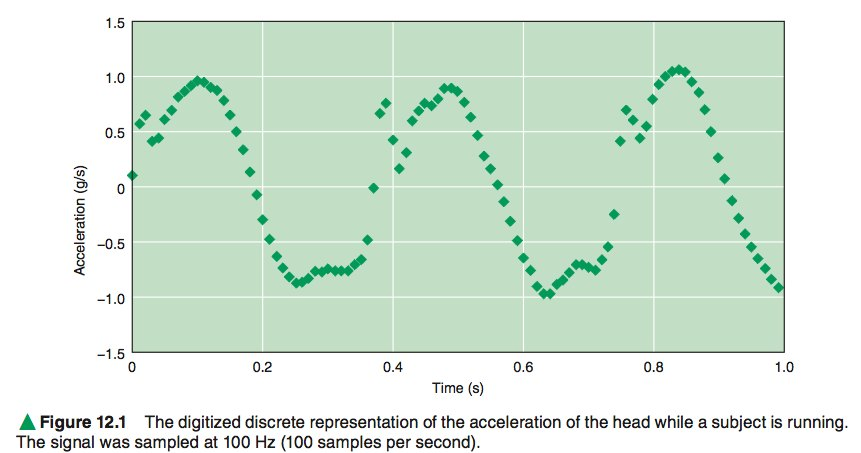
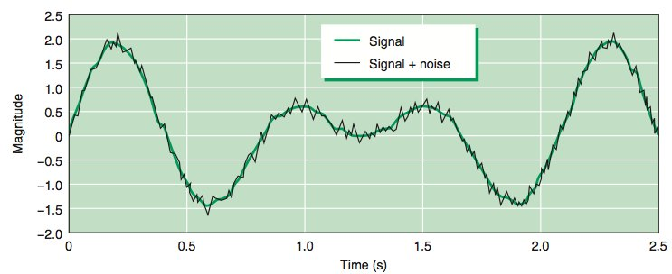
Signals
We can minimize the noise by processing the data.
Sampling properly
Smoothing data
Filtering data
Fitting data
To inform our processing choices we need to understand some basic
characteristics of signals and the transformations that we intend to perform on them.
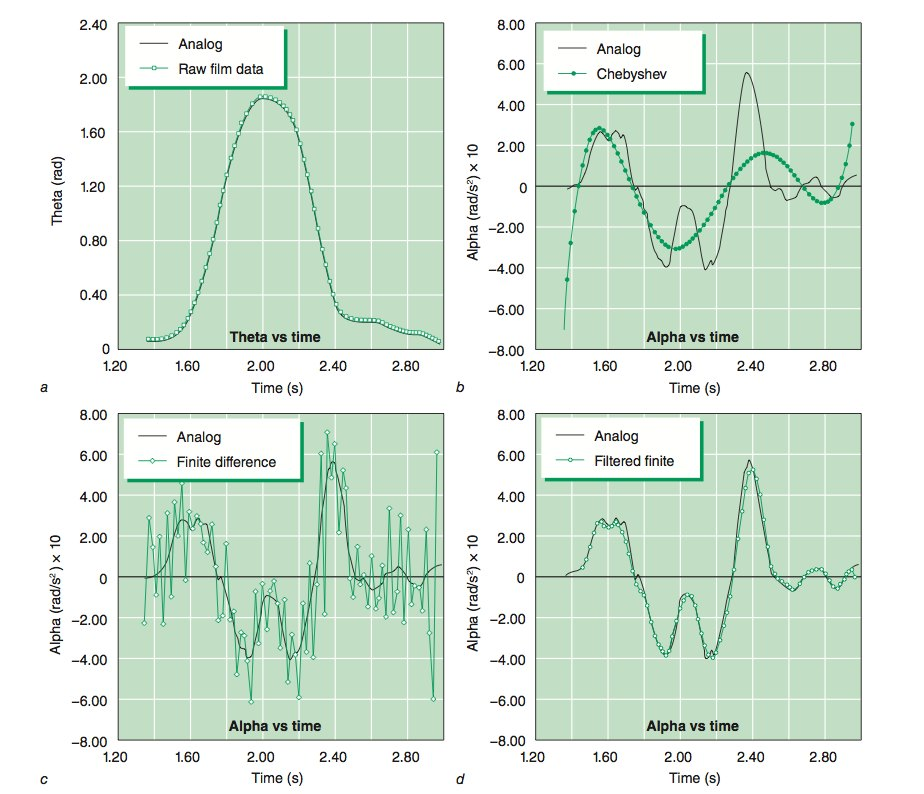
Nyquist–Shannon Sampling Theorem
In sampling an analog signal, the goal is to represent the original signal as
accurately as possible with as few discrete points as possible.
How high must the sampling frequency be for an analog signal to be accurately
represented by discrete data points?
Nyquist–Shannon Sampling Theorem
For a digital signal to represent an analog signal perfectly, the sampling
frequency must be at least twice the analog signal’s highest frequency.
Nyquist–Shannon Sampling Theorem
To ensure that sharp direction changes in the signal are not missed, sampling
frequencies of 5–10 times the Nyquist Frequency are often used.
Signals
Following data collection, “raw” data often contains noise.
Processing data post collection can improve the signal to noise
(S/N) ratio.
Smoothing, filtering and curve fitting can improve S/N ratio.
Processing is necessary before calculations are performed.
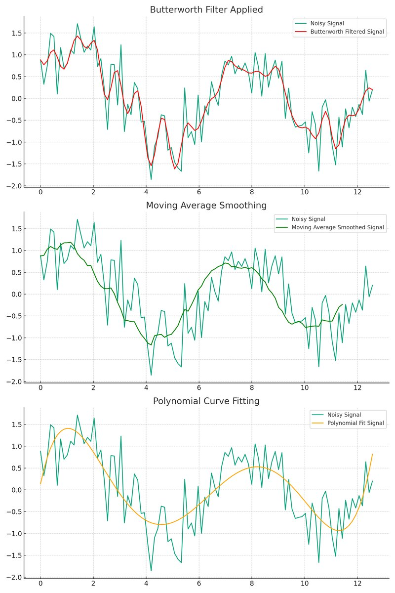
Signals
Filtering, smoothing and fitting can improve S/N using different approaches.
Filtering:
involves altering or removing certain frequency components from
a signal.
Smoothing:
involves averaging or aggregating data points to reduce
short-term fluctuations and highlight longer-term trends or cycles.
Curve Fitting:
to find a mathematical function that best represents a dataset.
This function may be a simple linear equation, a complex polynomial, or any other
mathematical form that closely matches the pattern of the data.
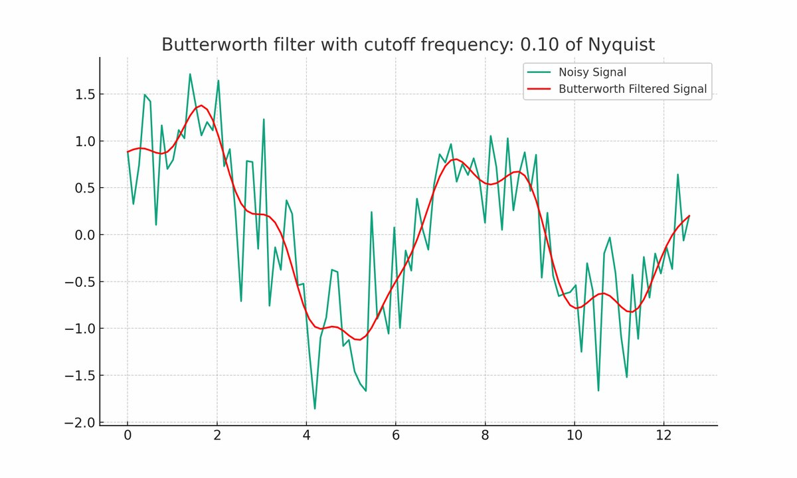
Smoothing
Moving average (over a window of samples). Simple averaging gets
rid of noisy spikes.
Smoothing
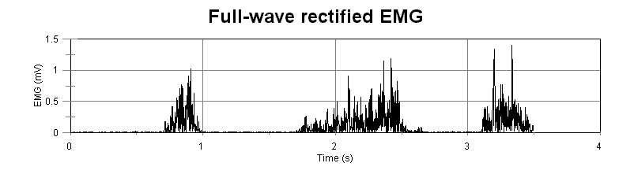
EMG (1010 Hz sampling rate)
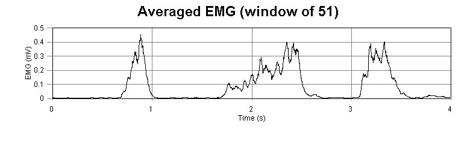
averaged EMG (moving average, 51 points)
Curve fitting
Fits a best-fitting function to the data.
Polynomials
Splines
linear
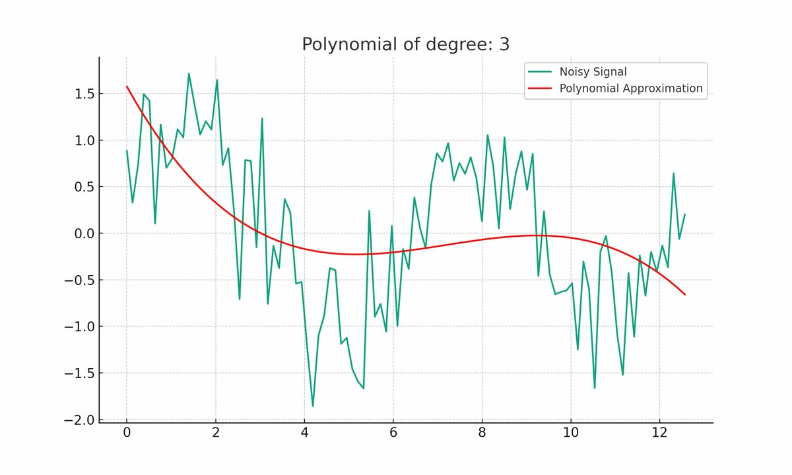
Components of a signal
Filtering – a process that removes some unwanted components or features from a
signal. Before we discuss filtering we need to talk about signal components.
frequency: the number of repeating cycles per unit time
amplitude: the magnitude of change
offset: the distance of the mean amplitude from zero
Phase Shift: a timing offset
Components of a signal
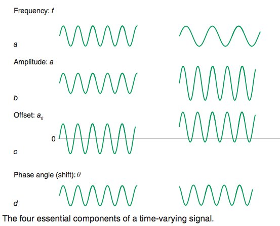
The four essential components of a time-varying signal.
Signals
Signals can be decomposed and reconstructed from a number of
basic functions (sine waves).
Once a signal is decomposed it can be represented in a frequency graph of the
basic sine waves.
Time Domain → Frequency Domain
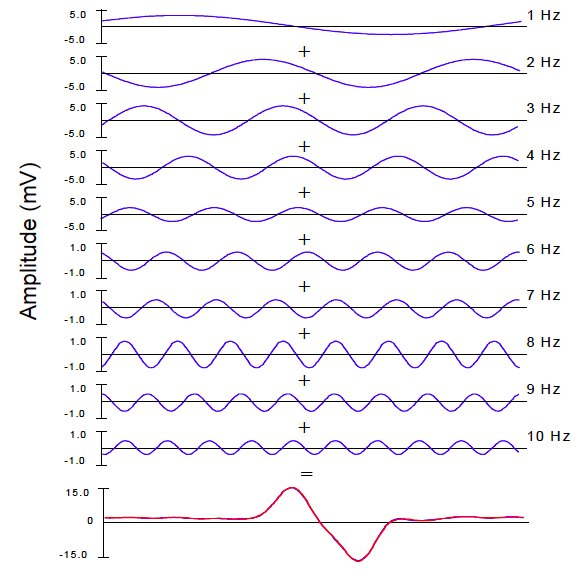
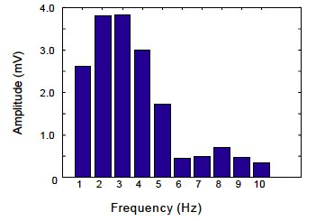
Frequency domain
A time-domain signal is converted to a frequency-domain signal with a mathematical
technique called a Fourier Transform.
Fourier transform
Fourier transform
The components, one graph each
Digital filtering
Is a way of reducing the frequency content of the signal so that it just
obtains the signal you are interested in without the noise.
A common use of Fourier transforms is to find the frequency components of a
time-domain signal that is mixed with noise.
Because noise is often of a different frequency than the intended signal, a
filter can be used to remove the noise (ie: parts of the signal that are a certain
frequency).
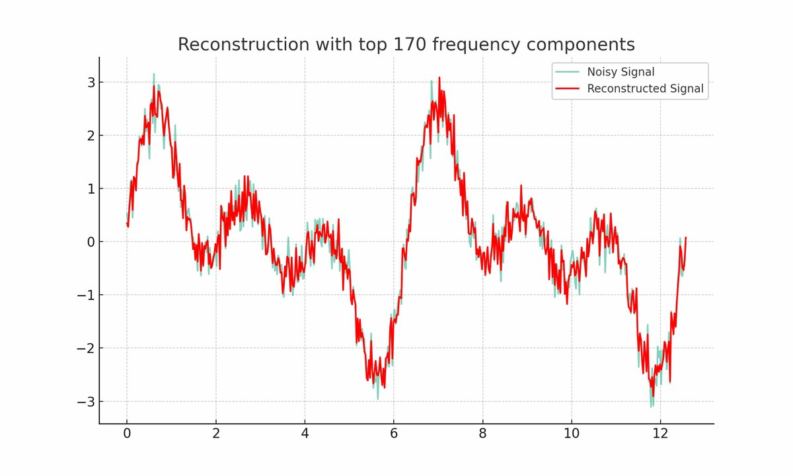
Digital filtering
Types:
low-pass, high-pass, band-pass, band stop and notch (single or small
band-stop filter, useful for AC interference)
Designs:
Butterworth, critically-damped, Chebyshev etc. (sharper cutoffs),
Generalized Cross-validation (GCV also called Woltring filter, 1986)
Problems:
Phase distortion (usually phase-lags occur)
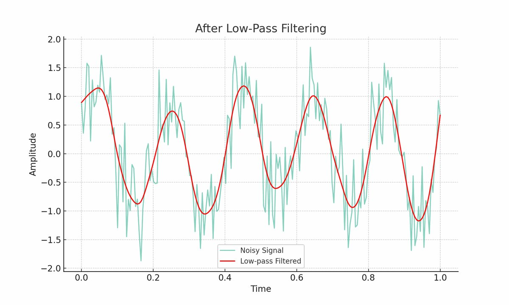
Digital filtering
Let’s say that we wanted to isolate different parts of the signal — we could use
different filters to do that. A low pass filter maintains low frequencies; a
high pass filter maintains high frequencies.
Digital filtering
25 Hz + 50 Hz, buried in random noise ten times larger than the
sine waves themselves — and pulled back out again.
Digital filtering
The most common source of noise in human motion capture data are small errors
in the position of the biomechanical markers during the digitization process.
This noise is typically low amplitude and high frequency;
therefore, a low-pass filter is often used to smooth kinematic data.
The aim of filtering is to arrive at the highest
signal : noise ratio
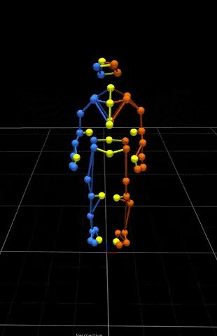
Digital filtering
Noise in motion capture data is amplified each time the data are
differentiated or integrated.
Digital filtering
Filtering, smoothing and fitting can aid in signal
Event Detection.
In many biomechanical analysis, signal processing algorithms are required.
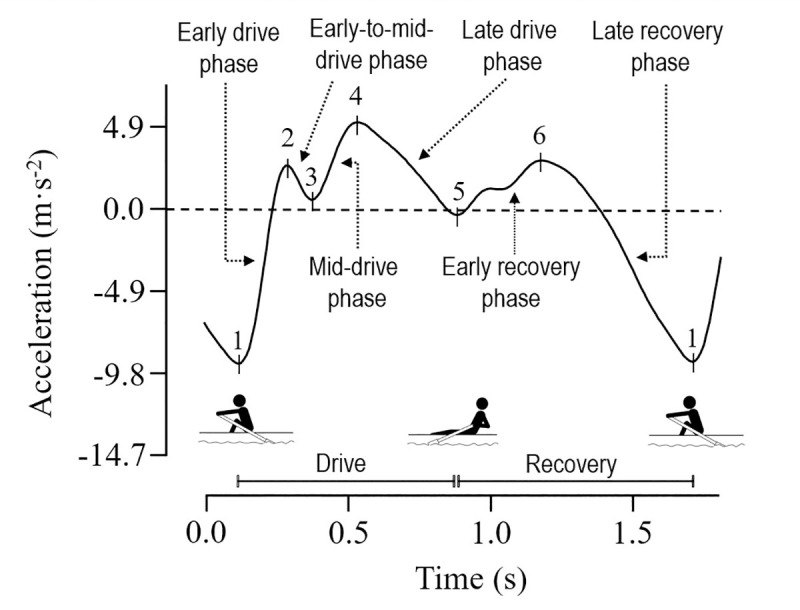
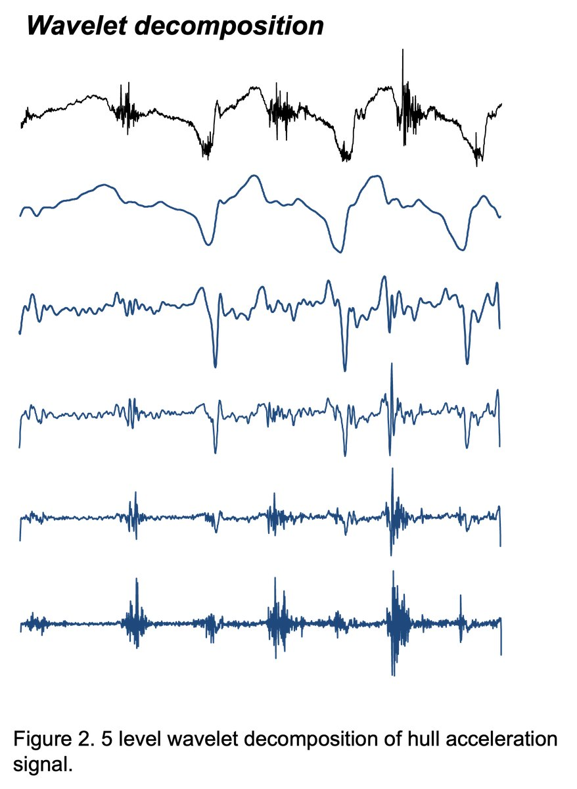
Digital filtering
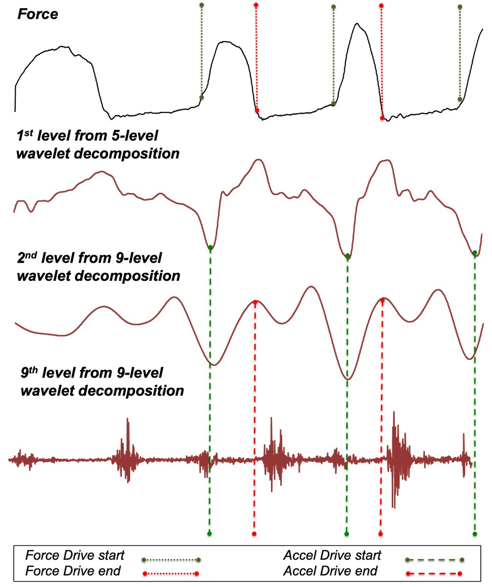
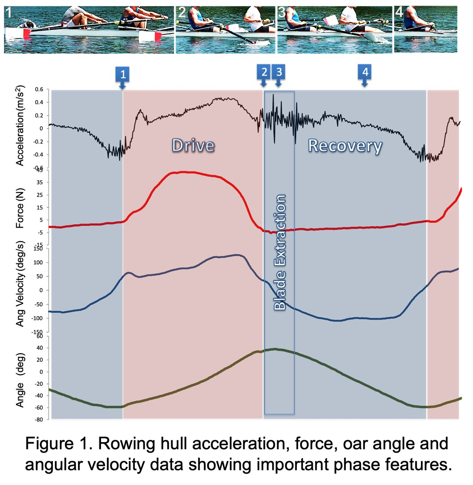
Signals summary
It is important to know features of the signal we are collecting.
Highest natural frequency in signal helps define the minimum sampling rate.
Data processing can come in the form of Filtering, smoothing and fitting.
It is important to get rid of noise before and after data transformation.